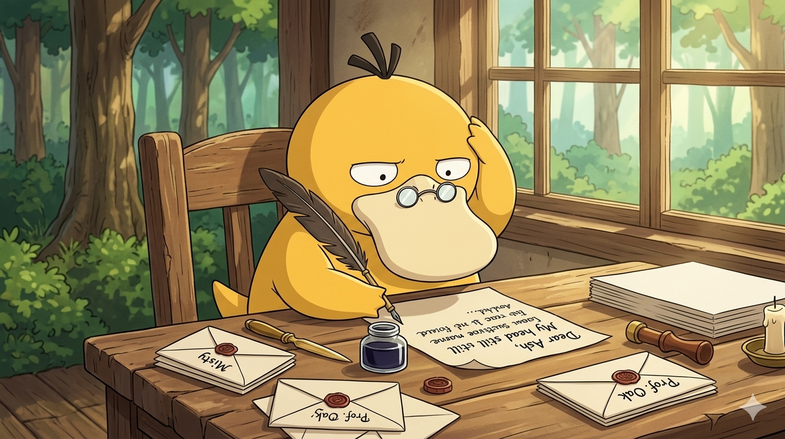
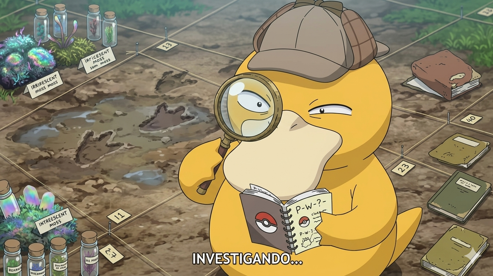
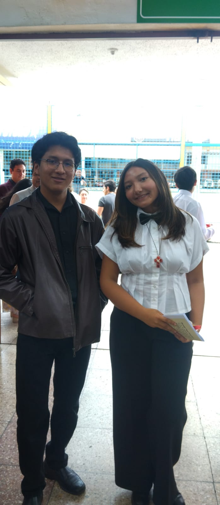
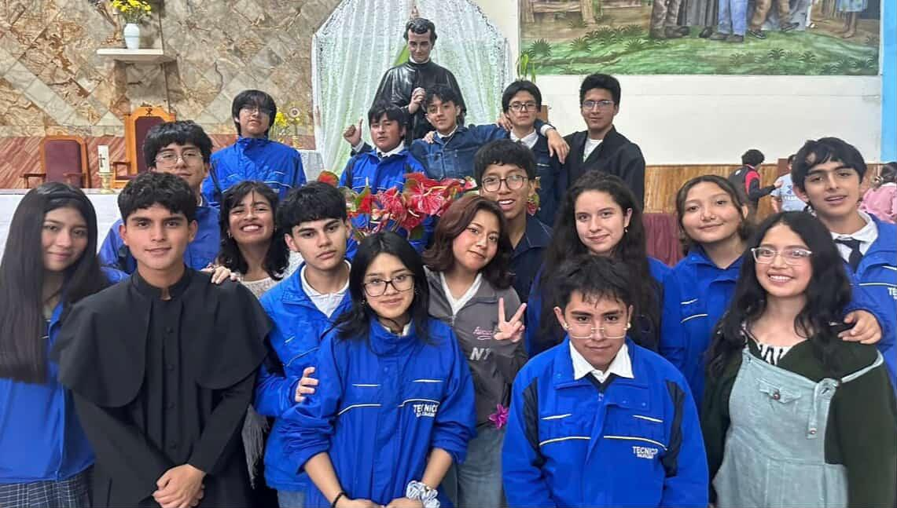
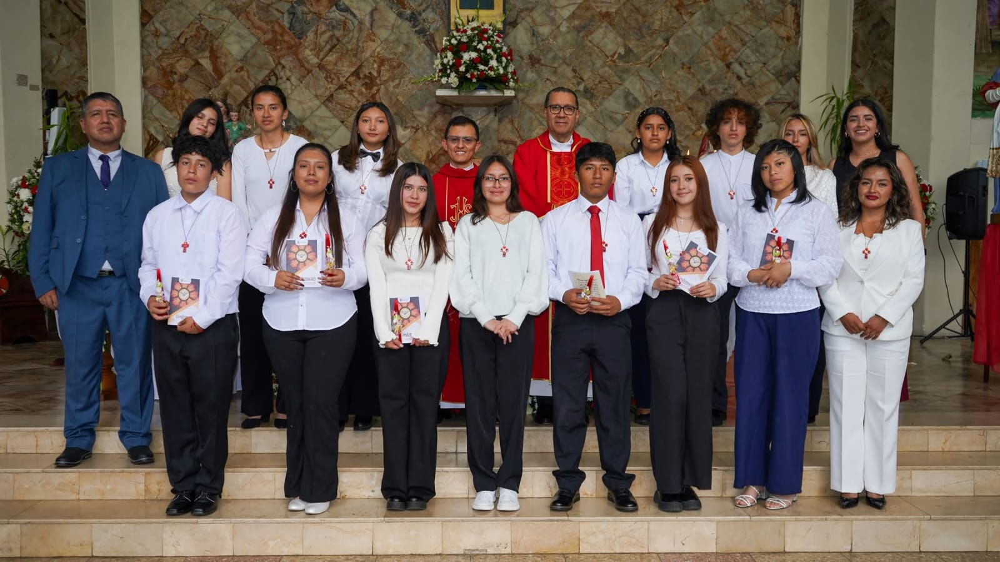
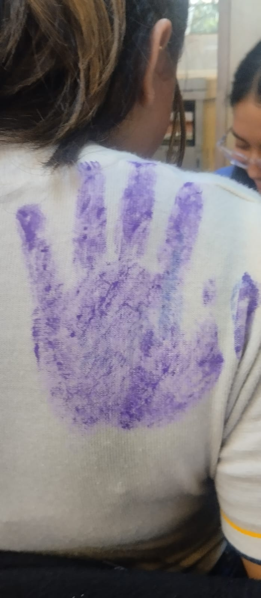

Una luz para las noches mas oscuras de cualquier persona
🎵
Toca para abrir tus canciones dedicadas
Selecciona una canción
Dedicado con amor
Letra de la canción
Selecciona una canción para ver su letra...

✍️ ¡Está escribiendo otra dedicatoria secreta! Ten paciencia... Haz clic para volver

🔎 ¡Psyduck está buscando más secretos y curiosidades sobre ti! Haz clic para volver
Una estrella que brilla a pesar de la oscuridad
No cambies ni dejes que nadie lo haga siempre estare contigo no lo olvides Guty
Queria sacar solo imagenes de instagram pero decidi mejor que no y mejor tomarlas yo mismo o poner las que ya tengo jsjs
Nuestros Momentos

¡Tu confirmacion! ✨
Recuerdos

Dia Ramdon (No me acuerdo de que era jsjs)
Grandes Aventuras

Tu ultimo dia siendo catequisada
Más Sonrisas

Una marca que sera mi mano gigante jsjssj
🎮 Minijuego: Atrapa las Estrellas
Mueve el mouse para atrapar 15 estrellas rojas ✨
Puntos: 0 / 15
¡Hola! ¿Escuchamos música? 🐾
🐶
¡Tócame para ver un mensaje secreto! ✨
🧰
Querida Emily,
Bueno no se como iniciar con esta carta como tal inicie esta pagina web en son de ver como acruabas
jamas pense que iba a tener esa reaccion lo continue por que te merecias algo mejor la proxima y tal vez la
ultima va hacer el doble de asombroso por que se podra ver desde los celulares jsjs y mas cosas capaz de un videojuego
de una mascota para criar jsjs no se jsjs ahora sip
Emi yo me estaba undiendo cuando te conoci sentia aun el dolor de haber perdido a un mejor amigo y un vacio
que nadie lo pudo llenar ni siquiera mi familia pero cuando te conoci pense uq solo ibas a estar por un tiempo es mas
hasta mi mente mismo me lo dijo me dijo oye ella solo es momentanio veras yo le dije okey jsjsj y mejor llamadas hasta madrugadas
jsjsj risas chismes ronquidos jsjsj y mi mente tambien quedo como yo que pedo oye te dije que solo era momentanio ahora
que esperas a que te llame o que chuchas y yo le dije nono y no se le dije solo me acostumbre a escucharla y los dos nos
quedamos locasossss dijimos goodddd pero nooooo por que ahora no te enamoraras ni haras que te guste y que paso que pun me gustastes y
yo le dije a mi mente y corazon y ellos me reclamaron como nunca ya que me dijieron como cuando y como paso y yo les dije no seeee paso el
tiempo y se calmo todo deje de sentir de nuevo y según yo aun sigue asi salvo que me este engañando por que como me dijo alguien me puedo engañar
yo pero al corazon nunca le podre engañar jsjsjs
Eres increible hoy en tu confirmacion casi me haces llorar no se por que pero estaba con ganas de llorar cuando te vi al frente desde las gradas
por eso hasta el pablito me vio con ojos medio queriendo llorar jsjsj cuando era el momento de que nos arodillamos si me salio una que otra lagrima
y cuando me levante me tuve que secar rapidisio jsjsj creo que se por que es y es por que ya estoy asimilando desde ahora que ya tengo que irme al
voluntariado y dejarte tus locuras si me va a doler horrible jsjs las llamadas las risas y todo jsjsj si te extrañare tu eres una de las personas por las
que lloraria si les pasara algo incluso cuando me valla jsjs no lo olvide nunca estaras solo yo siempre estare contigo pase lo que pase nunca estaras sola
te hize la carta por que se que decirte esto en persona se me traba la lengua ya me viste hoy como me fue solo para una foto quede pendejo sjsjs por eso
si soy bien awuebado sjsj perdonaras jsjs gracias Emi por todo enserio eres wuao jsjsj no seras la mas pilas pero eres una persona muy interesante
que cada que descubro algo nuevo de ti quedo como que wuao por que me sorprendes jsjsj no cambies por fas no quiero conocer a otra guty por que a la unica
guty que quisiera haber conocido ya la conoci y eres tu gracias por llenar ese vacio de mi mejor amigo el me diria pendejo por hacerte esto pero te mereces esto
y mas pero solo puedo esto por ahora jsjsj
Tu sabes que siempre estar contigo en las buenas en las malas en momentos donde quieras llorar o donde quieras reir
en momentos donde se te caiga el mundo o donde solo quieras estar acompañada se que no soy ni tu mejor amigo ni nada
pero aun asi quiero que sepas eso como tal si estoy trabajando con la IA pero igual es un dolor de cabeza ya que imaginate estar
sentado un buen rato y estar viendo a que todo una pagina no colapse jsjsj es dificillll jsjsj hasta a mi me da miedo aliminar cosas pero
toca o si no no quedaria bien como tal ahora esta seria una de las ultimas actulizaciones por el momento por que necesito seguir trabajando
estudiando e incluso preparandome para la colonia
Por eso va a estar ese boton en caso que me necesites solo presionalo y me llegara un mensaje a mi gmail como tal tiene un estimado de 50 veces al mes asi que se que de esas las usaras unas 0 al mes pero esta bien sjsjsj esta pagina yo se que tu diras pero por que te esfuerzas tanto si ya esta bien pero nop no es cierto esta pagina es mi reemplazo yo quiero que tenga todo lo que te diria haria o incluso veria en ti sjsj y no pienso dejarlo hasta que este todo goood por que por que si jsjsj aunque aun estoy aqui el tiempo pasa volandooooooo y quien sabe jsjsjs solo dire que cuando ya me valla al voluntariado estare orgulloso de dos cosas de esta pagina por que estara good y de ti por que se que vas a ir creciendo como persona aunque tu no lo creas pero yo creo en ti creo que creceras maduraras mas de lo que yo lo hize te equivocaras y durisimo como no te lo imaginas te vas a sentir sola de vez en cuando pero se que vas a seguir y tambien voy a asistir a tu graduacion si o si no pienses que ya solo te conoci hasta que me gradue y me voy nono.
Yo pienso estarte jodiendo un buen tiempoooooooo jsjsj si es que me lo permites obviooooo solo
que en el voluntariado si me mandas a la costa no puedo sacar mi celu como aqui en cuenca en
la calle alla me ven con celu me dan 2x1 bala y robo y nono si me mandan a la amazonia la señal
de donde me la saco sjsj y aqui en la sierra no seeeee yo creo que aqui no me mandarian pero de
ser asi seriaaaa en quito lo mismo que en la costa sjsjs esta carta se va a ir actualizando
cada vez que ingrese a actualizar la pagina web asi que acostumbrate a leer tantoooo jsjsj por
que si este incluso podria ser un libro jsjsj pero creeme cuando te dijo siempre pero siempre
estare contigo asi me este muriendo emocionalmente psicologicamente o incluso fisicamente no
importa jsjsjs yo me las aguanto a todo jsjsj no sere el mejorrrr chico de todos pero si el
que se preocupara por cada persona que le interesa y daria todo por ellos aunque creo que mas
me dolera a mi irme antes que a nadie jsjsj eso seria todo por hoy que estamos 14/06/2026.
Estoy orgulloso de ti jsjsj superaste la etapa de 10mo jsjsj capaz en algun momento dijiste que noooooooo podias
o cosas asi pero ahora mirate ya estas ya literalmente en bachiller jsjsjs me alegro por ti te lo prometo que enserio me alegro
por que se que ahora seras capaz de llegar mucho mas lejos y tranquilaaaaaa me falta un año para irme por eso esta ese contador de dias jsjsjs que estara contando los dias que me falta para irme
se ve mucho pero en realidad es poco jsjsj por que no seeeee siento que si me va a faltar cosas por hacer y muchas espero poderlas hacer por lo menos la mayoria
pero ahora estoy felicitandote jsjsj asi que tienes mi felicitaciones jsjsj ya sabes cuando quieras estare contigo jsjsj asi y si te preguntas cual es el objetivo de la web es tipo dejarte un doble yop
osea que cuando no este por cualquier motivo esta pagina tenga maneras de aconsejarte animarte o sino de contactarme pero aun falta full para eso mientras tanto seguire subiendo estas cosas que intento
hacer que se vean bien pero a la final del proximo año te prometo que sera la mejor web de todas y Guty sigue adelante yo confio en tip aunque hagas algo malo yo confiare en ti aunque me llamen locooo pendejo bruto ya que
jsjsj yo eligo creerte eso Guty 16/06/2026
Para ti Guty 😊 de todo corazon ^0^
Querida Emily,
Bueno no se como iniciar con esta carta como tal inicie esta pagina web en son de ver como acruabas jamas pense que iba a tener esa reaccion lo continue por que te merecias algo mejor la proxima y tal vez la ultima va hacer el doble de asombroso por que se podra ver desde los celulares jsjs y mas cosas capaz de un videojuego de una mascota para criar jsjs no se jsjs ahora sip.
Emi yo me estaba undiendo cuando te conoci sentia aun el dolor de haber perdido a un mejor amigo y un vacio que nadie lo pudo llenar ni siquiera mi familia pero cuando te conoci pense uq solo ibas a estar por un tiempo es mas hasta mi mente mismo me lo dijo me dijo oye ella solo es momentanio veras yo le dije okey jsjsj y mejor llamadas hasta madrugadas jsjsj risas chismes ronquidos jsjsj y mi mente tambien quedo como yo que pedo oye te dije que solo era momentanio ahora que esperas a que te llame o que chuchas y yo le dije nono y no se le dije solo me acostumbre a escucharla y los dos nos quedamos locasossss dijimos goodddd pero nooooo por que ahora no te enamoraras ni haras que te guste y que paso que pun me gustastes y yo le dije a mi mente y corazon y ellos me reclamaron como nunca ya que me dijieron como cuando y como paso y yo les dije no seeee paso el tiempo y se calmo todo deje de sentir de nuevo y segun yo aun sigue asi salvo que me este engañando por que como me dijo alguien me puedo engañar yo pero al corazon nunca le podre engañar jsjsjs.
Eres increible hoy en tu confirmacion casi me haces llorar no se por que pero estaba con ganas de llorar cuando te vi al frente desde las gradas por eso hasta el pablito me vio con ojos medio queriendo llorar jsjsj cuando era el momento de que nos arodillamos si me salio una que otra lagrima y cuando me levante me tuve que secar rapidisio jsjsj creo que se por que es y es por que ya estoy asimilando desde ahora que ya tengo que irme al voluntariado y dejarte tus locuras si me va a doler horrible jsjs las llamadas las risas y todo jsjsj si te extrañare tu eres una de las personas por las que lloraria si les pasara algo incluso cuando me valla jsjs no lo olvide nunca estaras solo yo siempre estare contigo pase lo que pase nunca estaras sola te hize la carta por que se que decirte esto en persona se me traba la lengua ya me viste hoy como me fue solo para una foto quede pendejo sjsjs por eso si soy bien awuebado sjsjs perdonaras jsjs gracias Emi por todo enserio eres wuao jsjsj no seras la mas pilas pero eres una persona muy interesante que cada que descubro algo nuevo de ti quedo como que wuao por que me sorprendes jsjsj no cambies por fas no quiero conocer a otra guty por que a la unica guty que quisiera haber conocido ya la conoci y eres tu gracias por llenar ese vacio de mi mejor amigo el me diria pendejo por hacerte esto pero te mereces esto y mas pero solo puedo esto por ahora jsjsj.
Tu sabes que siempre estar contigo en las buenas en las malas en momentos donde quieras llorar o donde quieras reir en momentos donde se te caiga el mundo o donde solo quieras estar acompañada se que no soy ni tu mejor amigo ni nada pero aun asi quiero que sepas eso como tal si estoy trabajando con la IA pero igual es un dolor de cabeza ya que imaginate estar sentado un buen rato y estar viendo a que todo una pagina no colapse jsjsj es dificillll jsjsj hasta a mi me da miedo aliminar cosas pero toca o si no no quedaria bien como tal ahora esta seria una de las ultimas actulizaciones por el momento por que necesito seguir trabajando estudiando e incluso preparandome para la colonia
Por eso va a estar ese boton en caso que me necesites solo presionalo y me llegara un mensaje a mi gmail como tal tiene un estimado de 50 veces al mes asi que se que de esas las usaras unas 0 al mes pero esta bien sjsjsj esta pagina yo se que tu diras pero por que te esfuerzas tanto si ya esta bien pero nop no es cierto esta pagina es mi reemplazo yo quiero que tenga todo lo que te diria haria o incluso veria en ti sjsj y no pienso dejarlo hasta que este todo goood por que por que si jsjsj aunque aun estoy aqui el tiempo pasa volandooooooo y quien sabe jsjsjs solo dire que cuando ya me valla al voluntariado estare orgulloso de dos cosas de esta pagina por que estara good y de ti por que se que vas a ir creciendo como persona aunque tu no lo creas pero yo creo en ti creo que creceras maduraras mas de lo que yo lo hize te equivocaras y durisimo como no te lo imaginas te vas a sentir sola de vez en cuando pero se que vas a seguir y tambien voy a asistir a tu graduacion si o si no pienses que ya solo te conoci hasta que me gradue y me voy nono.
Yo pienso estarte jodiendo un buen tiempoooooooo jsjsj si es que me lo permites obviooooo solo que en el voluntariado si me mandas a la costa no puedo sacar mi celu como aqui en cuenca en la calle alla me ven con celu me dan 2x1 bala y robo y nono si me mandan a la amazonia la señal de donde me la saco sjsj y aqui en la sierra no seeeee yo creo que aqui no me mandarian pero de ser asi seriaaaa en quito lo mismo que en la costa sjsjs esta carta se va a ir actualizando cada vez que ingrese a actualizar la pagina web asi que acostumbrate a leer tantoooo jsjsj por que si este incluso podria ser un libro jsjsj pero creeme cuando te dijo siempre pero siempre estare contigo asi me este muriendo emocionalmente psicologicamente o incluso fisicamente no importa jsjsjs yo me las aguanto a todo jsjsj no sere el mejorrrr chico de todos pero si el que se preocupara por cada persona que le interesa y daria todo por ellos aunque creo que mas me dolera a mi irme antes que a nadie jsjsj eso seria todo por hoy que estamos 14/06/2026.
Estoy orgulloso de ti jsjsj superaste la etapa de 10mo jsjsj capaz en algun momento dijiste que noooooooo podias
o cosas asi pero ahora mirate ya estas ya literalmente en bachiller jsjsjs me alegro por ti te lo prometo que enserio me alegro
por que se que ahora seras capaz de llegar mucho mas lejos y tranquilaaaaaa me falta un año para irme por eso esta ese contador de dias jsjsjs que estara contando los dias que me falta para irme
se ve mucho pero en realidad es poco jsjsj por que no seeeee siento que si me va a faltar cosas por hacer y muchas espero poderlas hacer por lo menos la mayoria
pero ahora estoy felicitandote jsjsj asi que tienes mi felicitaciones jsjsj ya sabes cuando quieras estare contigo jsjsj asi y si te preguntas cual es el objetivo de la web es tipo dejarte un doble yop
osea que cuando no este por cualquier motivo esta pagina tenga maneras de aconsejarte animarte o sino de contactarme pero aun falta full para eso mientras tanto seguire subiendo estas cosas que intento
hacer que se vean bien pero a la final del proximo año te prometo que sera la mejor web de todas y Guty sigue adelante yo confio en tip aunque hagas algo malo yo confiare en ti aunque me llamen locooo pendejo bruto ya que
jsjsj yo eligo creerte eso Guty 16/06/2026